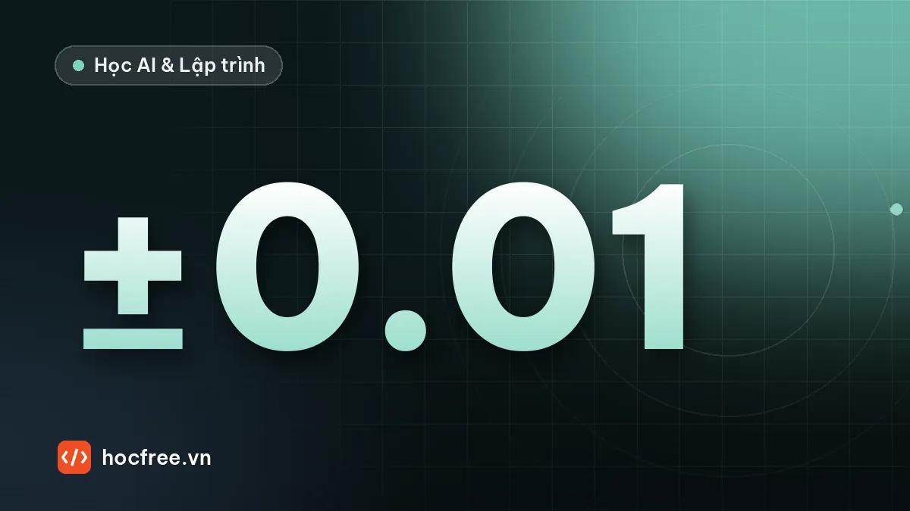

Đo cạnh subpixel, fitting đường thẳng và đường tròn với OpenCV
Tìm cạnh chính xác dưới 1 pixel bằng caliper, fit đường thẳng và đường tròn bằng bình phương tối thiểu, loại ba via và đánh giá độ lặp lại phép đo.

Học xong bài này, bạn sẽ
- Tìm vị trí cạnh chính xác dưới 1 pixel
- Fit đường thẳng, đường tròn bằng bình phương tối thiểu
- Đo khoảng cách, đường kính ổn định
Nên học trước: Bài tập chặng 6: chọn camera, ống kính, đèn cho bài toán thật
Nội dung bài viết
- 1. Vì sao cần subpixel?
- 2. Cạnh trong ảnh thật không phải bậc thang
- 3. Tìm cạnh subpixel trên profile 1D
- 4. Ảnh mẫu 2D với đáp án biết trước
- 5. Caliper: quét profile vuông góc với cạnh
- 6. Fit đường thẳng và đo khoảng cách
- 7. Fit đường tròn: Kasa và so với contour
- 8. Ba via và điểm nhiễu: fit bền vững
- 9. Độ lặp lại: đo 30 lần, xem độ lệch chuẩn
- 10. Lỗi thường gặp
- Bài tập
- Tóm tắt
Đến chặng này bạn đã biết tìm vật bằng ngưỡng và contour, và ở chặng Camera, ống kính, chiếu sáng bạn đã chọn được cấu hình quang học cho bài đo. Nhưng nếu đo kích thước bằng contour, kết quả chỉ chính xác đến ±1 pixel ở mỗi cạnh, trong khi bản vẽ kỹ thuật thường ghi dung sai ±0,02 mm. Bài này dạy kỹ thuật mà mọi phần mềm đo công nghiệp đều dùng: tìm cạnh subpixel (chính xác dưới 1 pixel) dọc theo các đường quét, rồi fitting (khớp) đường thẳng, đường tròn bằng bình phương tối thiểu để có kết quả ổn định. Mọi ví dụ chạy trên ảnh tổng hợp mà ta biết chính xác "đáp án thật", nên bạn sẽ thấy rõ sai số của từng cách.
1. Vì sao cần subpixel?
Ví dụ thực tế: đo chiều rộng một thanh đồng 10,00 mm, dung sai ±0,03 mm. Camera 1280 px nhìn trường nhìn (FOV) 64 mm, vậy 1 pixel = 64 / 1280 = 0,05 mm.
| Cách đo | Sai số mỗi cạnh | Sai số chiều rộng (2 cạnh) | So với dung sai ±0,03 mm |
|---|---|---|---|
| Contour / ngưỡng, pixel nguyên | ±0,5 px = ±0,025 mm | tới ±0,05 mm | Không dùng được |
| Cạnh subpixel 0,05 px + fitting | ±0,0025 mm | khoảng ±0,005 mm | Đủ dùng |
Quy tắc kinh nghiệm trong đo lường: độ phân giải của hệ đo nên nhỏ hơn khoảng 1/10 khoảng dung sai. Khoảng dung sai ở đây là 0,06 mm, vậy hệ đo cần phân biệt được cỡ 0,006 mm, tức khoảng 0,12 px. Không có subpixel thì phải tăng độ phân giải camera lên vài lần, đắt và chậm hơn nhiều.
Hai khái niệm phải tách bạch ngay từ đầu:
- Độ lặp lại (repeatability): đo cùng một vật nhiều lần, kết quả dao động bao nhiêu (độ lệch chuẩn σ). Subpixel và fitting chủ yếu cải thiện cái này.
- Độ chính xác (accuracy): trung bình kết quả lệch bao nhiêu so với giá trị thật. Sai lệch hệ thống được bù bằng hiệu chuẩn với mẫu chuẩn (chặng Calibration).
2. Cạnh trong ảnh thật không phải bậc thang
Subpixel làm được là nhờ cạnh trong ảnh có vùng chuyển tiếp: mỗi pixel cảm biến lấy trung bình ánh sáng trên diện tích của nó, ống kính lại làm mờ thêm một chút. Pixel nằm vắt ngang cạnh sẽ có mức xám trung gian, và mức xám đó "mã hóa" vị trí cạnh bên trong pixel. Ta mô phỏng đúng quá trình này: vẽ cạnh ở độ phân giải cao gấp 16 lần (siêu lấy mẫu), lấy trung bình từng nhóm 16 điểm thành 1 pixel, rồi làm mờ Gaussian như ống kính.
import cv2
import numpy as np
S = 16 # siêu lấy mẫu: mỗi pixel camera gồm 16 điểm con
def tao_profile(x_canh, n=40, toi=40, sang=200, sigma=0.8):
"""Profile 1D: trái tối, phải sáng, cạnh thật nằm tại tọa độ x_canh.
Quy ước OpenCV: tâm pixel i ở tọa độ i, pixel i phủ đoạn [i-0.5, i+0.5)."""
u = (np.arange(n * S) + 0.5) / S - 0.5 # tọa độ tâm các điểm con
cao = np.where(u >= x_canh, sang, toi).astype(np.float32)
p = cao.reshape(n, S).mean(axis=1) # cảm biến: trung bình trên diện tích pixel
return cv2.GaussianBlur(p.reshape(1, -1), (0, 0), sigma).ravel() # ống kính làm mờ
p = tao_profile(20.3)
for i in range(16, 25):
print(f"pixel {i}: {p[i]:6.1f}")pixel 16: 40.0
pixel 17: 40.0
pixel 18: 40.7
pixel 19: 50.4
pixel 20: 95.1
pixel 21: 166.7
pixel 22: 197.1
pixel 23: 199.9
pixel 24: 200.0Cạnh thật ở 20,3 nhưng không có pixel nào "nhảy" từ 40 lên 200: các pixel 18–22 có mức trung gian. Nếu chỉ phân ngưỡng ở 120, ta chỉ biết cạnh nằm giữa pixel 20 và 21 (sai số tới 0,5 px). Thông tin vị trí chính xác nằm trong hình dạng của vùng chuyển tiếp.
3. Tìm cạnh subpixel trên profile 1D
Cạnh là nơi mức xám thay đổi nhanh nhất, tức đỉnh của gradient (đạo hàm). Các bước:
- Tính gradient bằng sai phân trung tâm: g[i] = (p[i+1] − p[i−1]) / 2.
- Tìm pixel k có |g| lớn nhất (vị trí nguyên).
- Khớp một parabol qua 3 điểm g[k−1], g[k], g[k+1]; đỉnh parabol nằm tại k + δ với
δ = (g[k−1] − g[k+1]) / (2·(g[k−1] − 2·g[k] + g[k+1])), luôn trong khoảng (−0,5; 0,5).
Cách thứ hai đơn giản hơn: tìm nơi profile cắt mức 50% giữa tối và sáng, nội suy tuyến tính giữa hai pixel. Ta so sánh cả ba cách (pixel nguyên, 50%, parabol) với vị trí thật khi dời cạnh từng 0,1 px:
import cv2
import numpy as np
S = 16
def tao_profile(x_canh, n=40, toi=40, sang=200, sigma=0.8):
u = (np.arange(n * S) + 0.5) / S - 0.5
cao = np.where(u >= x_canh, sang, toi).astype(np.float32)
p = cao.reshape(n, S).mean(axis=1)
return cv2.GaussianBlur(p.reshape(1, -1), (0, 0), sigma).ravel()
def canh_parabol(p):
"""Vị trí cạnh subpixel = đỉnh parabol khớp qua 3 điểm gradient quanh cực đại."""
p = np.asarray(p, np.float64)
g = np.zeros_like(p)
g[1:-1] = np.abs(p[2:] - p[:-2]) / 2
k = int(np.argmax(g))
a, b, c = g[k - 1], g[k], g[k + 1]
return k + 0.5 * (a - c) / (a - 2 * b + c)
def canh_50(p):
"""Vị trí profile cắt mức 50% (nội suy tuyến tính), cho cạnh tối → sáng."""
muc = (p.min() + p.max()) / 2
i = int(np.where((p[:-1] < muc) & (p[1:] >= muc))[0][0])
return i + (muc - p[i]) / (p[i + 1] - p[i])
print(" thật nguyên 50% parabol")
sai = {"nguyên": [], "50%": [], "parabol": []}
for x in np.arange(20.0, 21.0, 0.1):
p = tao_profile(x)
k = int(np.argmax(np.abs(np.gradient(p)))) # pixel có gradient lớn nhất (vị trí nguyên)
a, b = canh_50(p), canh_parabol(p)
sai["nguyên"].append(k - x); sai["50%"].append(a - x); sai["parabol"].append(b - x)
print(f"{x:5.2f} {k:3d} {a:6.3f} {b:6.3f}")
for ten, e in sai.items():
print(f"sai số lớn nhất {ten:8s}: {np.max(np.abs(e)):.3f} px")thật nguyên 50% parabol
20.00 20 20.000 20.000
20.10 20 20.157 20.125
20.20 20 20.226 20.187
20.30 20 20.348 20.312
20.40 20 20.402 20.375
20.50 20 20.500 20.500
20.60 21 20.598 20.625
20.70 21 20.652 20.687
20.80 21 20.774 20.812
20.90 21 20.843 20.875
sai số lớn nhất nguyên : 0.500 px
sai số lớn nhất 50% : 0.057 px
sai số lớn nhất parabol : 0.025 pxTrên ảnh không nhiễu, parabol cho sai số lớn nhất 0,025 px, tốt hơn 20 lần so với vị trí nguyên (0,5 px). Cách cắt mức 50% cũng tốt (0,057 px) nhưng phụ thuộc vào việc biết đúng mức tối và mức sáng, vốn thay đổi theo đèn và bề mặt vật. Sai số còn lại là sai số hệ thống của phép nội suy, phụ thuộc vị trí cạnh trong pixel (khi cạnh nằm đúng tâm hoặc đúng biên pixel thì sai số bằng 0). Bây giờ thêm nhiễu cảm biến, điều luôn có trong ảnh thật:
import cv2
import numpy as np
S = 16
def tao_profile(x_canh, n=40, toi=40, sang=200, sigma=0.8):
u = (np.arange(n * S) + 0.5) / S - 0.5
cao = np.where(u >= x_canh, sang, toi).astype(np.float32)
p = cao.reshape(n, S).mean(axis=1)
return cv2.GaussianBlur(p.reshape(1, -1), (0, 0), sigma).ravel()
def canh_parabol(p):
p = np.asarray(p, np.float64)
g = np.zeros_like(p)
g[1:-1] = np.abs(p[2:] - p[:-2]) / 2
k = int(np.argmax(g))
a, b, c = g[k - 1], g[k], g[k + 1]
return k + 0.5 * (a - c) / (a - 2 * b + c)
rng = np.random.default_rng(1)
sach = tao_profile(20.3)
for nhieu in (1, 3, 8):
kq = [canh_parabol(sach + rng.normal(0, nhieu, sach.size)) for _ in range(1000)]
print(f"nhiễu σ={nhieu} mức xám: trung bình {np.mean(kq):.3f}, độ lệch chuẩn {np.std(kq):.3f} px")nhiễu σ=1 mức xám: trung bình 20.314, độ lệch chuẩn 0.021 px
nhiễu σ=3 mức xám: trung bình 20.318, độ lệch chuẩn 0.064 px
nhiễu σ=8 mức xám: trung bình 20.345, độ lệch chuẩn 0.171 pxTương phản cạnh ở đây là 160 mức xám. Độ lệch chuẩn của vị trí cạnh tăng gần tỉ lệ thuận với nhiễu và tỉ lệ nghịch với tương phản. Hai hệ quả thực tế: (1) tăng tương phản bằng chiếu sáng có lợi hơn mọi thuật toán; (2) một điểm cạnh đơn lẻ vẫn dao động, nên ta không đo bằng 1 điểm mà fit qua hàng chục điểm (mục 5).
4. Ảnh mẫu 2D với đáp án biết trước
Ảnh mô phỏng trạm đo dùng đèn nền: nền sáng 210, vật tối 40. Có một thanh kim loại rộng đúng 80,4 px, nghiêng 3°, và một đĩa tròn đường kính 120,5 px, tâm (290,37; 148,62). Ảnh thứ hai có thêm ba via (burr, gờ thừa kim loại) trên cạnh phải của thanh và trên mép đĩa, để luyện kỹ thuật loại điểm nhiễu. Khối này chạy vài giây vì vẽ ở độ phân giải gấp 8 lần.
import math
import cv2
import numpy as np
W, H, S = 400, 300, 8
GOC = math.radians(3.0) # thanh nghiêng 3°
TAM_THANH, RONG = (120.0, 150.0), 80.4
TAM_DIA, BAN_KINH = (290.37, 148.62), 60.25
def ve_mau(bavia=False):
xs = ((np.arange(W * S) + 0.5) / S - 0.5).astype(np.float32)
ys = ((np.arange(H * S) + 0.5) / S - 0.5).astype(np.float32)
X, Y = np.meshgrid(xs, ys)
d = (X - TAM_THANH[0]) * math.cos(GOC) + (Y - TAM_THANH[1]) * math.sin(GOC) # khoảng cách tới trục thanh
vat = np.abs(d) <= RONG / 2
vat |= (X - TAM_DIA[0]) ** 2 + (Y - TAM_DIA[1]) ** 2 <= BAN_KINH ** 2
if bavia:
e = (Y - TAM_THANH[1]) * math.cos(GOC) - (X - TAM_THANH[0]) * math.sin(GOC) # tọa độ dọc cạnh
vat |= (d > RONG / 2) & (d < RONG / 2 + 3.0 * (1 - np.abs(e - 50) / 8)) # gờ cao 3 px
r = np.hypot(X - TAM_DIA[0], Y - TAM_DIA[1])
a = np.degrees(np.arctan2(Y - TAM_DIA[1], X - TAM_DIA[0]))
vat |= (r < BAN_KINH + 3.0 * (1 - np.abs(a + 45) / 5)) & (np.abs(a + 45) < 5) # gờ trên mép đĩa
cao = np.where(vat, 40, 210).astype(np.float32)
anh = cv2.resize(cao, (W, H), interpolation=cv2.INTER_AREA) # trung bình 8×8 điểm con
return cv2.GaussianBlur(anh, (0, 0), 0.8) # ống kính
rng = np.random.default_rng(0)
sach = ve_mau()
np.save("mau_sach.npy", sach) # dùng lại ở mục 8
cv2.imwrite("mau.png", np.clip(sach + rng.normal(0, 2, sach.shape), 0, 255).round().astype(np.uint8))
bv = ve_mau(bavia=True)
cv2.imwrite("mau_bavia.png", np.clip(bv + rng.normal(0, 2, bv.shape), 0, 255).round().astype(np.uint8))
print("Đã lưu mau.png, mau_bavia.png, mau_sach.npy")
print(f"Đáp án: rộng thanh {RONG} px, góc cạnh {90 + 3.0:.1f}°, đường kính đĩa {2 * BAN_KINH} px")Đã lưu mau.png, mau_bavia.png, mau_sach.npy
Đáp án: rộng thanh 80.4 px, góc cạnh 93.0°, đường kính đĩa 120.5 px5. Caliper: quét profile vuông góc với cạnh
Trong ảnh 2D, ta không tìm cạnh trên cả ảnh mà đặt các đường quét ngắn cắt ngang cạnh cần đo, gần như vuông góc với nó. Mỗi đường quét cho 1 điểm cạnh subpixel. Công cụ này trong phần mềm thương mại gọi là caliper (thước cặp) hoặc edge tool. Ta lấy mẫu mức xám dọc đường quét bằng cv2.remap: hàm này đọc ảnh tại tọa độ thực bất kỳ (nội suy), nên đường quét có thể nghiêng tùy ý.
Tham số quan trọng là cực tính (polarity): theo chiều quét, cạnh đi từ tối sang sáng (+1) hay sáng sang tối (−1). Khai báo đúng cực tính giúp caliper không bắt nhầm cạnh khác ở gần.
import math
import cv2
import numpy as np
def tim_canh(anh, tam, huong, dai=40, cuc=0, nguong=10):
"""Quét đoạn dài `dai` px qua điểm `tam` theo `huong`.
cuc: +1 tối→sáng, -1 sáng→tối, 0 cả hai. Trả về (x, y) subpixel hoặc None."""
hx, hy = np.asarray(huong, np.float64) / np.hypot(*huong)
t = np.arange(-dai / 2, dai / 2 + 1)
mx = (tam[0] + t * hx).astype(np.float32).reshape(1, -1)
my = (tam[1] + t * hy).astype(np.float32).reshape(1, -1)
p = cv2.remap(anh, mx, my, cv2.INTER_CUBIC).ravel().astype(np.float64)
g = np.zeros_like(p)
g[1:-1] = (p[2:] - p[:-2]) / 2
g = np.abs(g) if cuc == 0 else g * cuc
k = int(np.argmax(g))
if g[k] < nguong or k < 2 or k > len(g) - 3:
return None # không có cạnh đủ mạnh
a, b, c = g[k - 1], g[k], g[k + 1]
s = t[k] + 0.5 * (a - c) / (a - 2 * b + c)
return tam[0] + s * hx, tam[1] + s * hy
anh = cv2.imread("mau.png", cv2.IMREAD_GRAYSCALE).astype(np.float32)
trai, phai = [], []
for y in range(20, 281, 10): # 27 đường quét ngang
trai.append(tim_canh(anh, (80, y), (1, 0), cuc=-1)) # cạnh trái: nền sáng → vật tối
phai.append(tim_canh(anh, (160, y), (1, 0), cuc=+1)) # cạnh phải: vật tối → nền sáng
trai = np.array([q for q in trai if q is not None], np.float32)
phai = np.array([q for q in phai if q is not None], np.float32)
print("số điểm cạnh:", len(trai), len(phai))
print("3 điểm đầu cạnh trái:", np.round(trai[:3], 3).tolist())
# Đối chiếu đáp án: khoảng cách có dấu từ điểm tới trục thanh phải là ±40.2
g = math.radians(3.0)
d = (trai[:, 0] - 120) * math.cos(g) + (trai[:, 1] - 150) * math.sin(g)
print(f"sai số từng điểm cạnh trái: lớn nhất {np.max(np.abs(d + 40.2)):.3f} px")số điểm cạnh: 27 27
3 điểm đầu cạnh trái: [[86.6050033569336, 20.0], [86.03800201416016, 30.0], [85.56099700927734, 40.0]]
sai số từng điểm cạnh trái: lớn nhất 0.072 pxỞ đây đường quét nằm ngang còn cạnh nghiêng 3°, vẫn ổn vì điểm tìm được vẫn nằm trên cạnh. Khi cạnh nghiêng nhiều (trên khoảng 20–30°), hãy xoay hướng quét theo pháp tuyến của cạnh, nếu không vùng chuyển tiếp dọc đường quét bị kéo dài và kém chính xác. Trong chương trình thật, vị trí và hướng của các đường quét được đặt theo kết quả định vị vật (template matching, bài sau), không cố định như ví dụ.
6. Fit đường thẳng và đo khoảng cách
Có 27 điểm trên mỗi cạnh, ta tìm đường thẳng "đi gần nhất" các điểm theo nghĩa bình phương tối thiểu. Lưu ý: không dùng hồi quy y = ax + b vì nó chỉ cực tiểu sai số theo trục y và hỏng hoàn toàn với cạnh gần thẳng đứng như ở đây. Cách đúng là bình phương tối thiểu toàn phần (total least squares): cực tiểu tổng bình phương khoảng cách vuông góc từ điểm tới đường. Lời giải: đường đi qua trọng tâm các điểm, hướng là vector riêng lớn nhất của ma trận hiệp phương sai, tính bằng SVD. cv2.fitLine với DIST_L2 làm đúng việc này.
import math
import cv2
import numpy as np
def tim_canh(anh, tam, huong, dai=40, cuc=0, nguong=10):
hx, hy = np.asarray(huong, np.float64) / np.hypot(*huong)
t = np.arange(-dai / 2, dai / 2 + 1)
mx = (tam[0] + t * hx).astype(np.float32).reshape(1, -1)
my = (tam[1] + t * hy).astype(np.float32).reshape(1, -1)
p = cv2.remap(anh, mx, my, cv2.INTER_CUBIC).ravel().astype(np.float64)
g = np.zeros_like(p)
g[1:-1] = (p[2:] - p[:-2]) / 2
g = np.abs(g) if cuc == 0 else g * cuc
k = int(np.argmax(g))
if g[k] < nguong or k < 2 or k > len(g) - 3:
return None
a, b, c = g[k - 1], g[k], g[k + 1]
s = t[k] + 0.5 * (a - c) / (a - 2 * b + c)
return tam[0] + s * hx, tam[1] + s * hy
def fit_duong(P):
"""Bình phương tối thiểu toàn phần bằng SVD. Trả về (điểm trên đường, vector hướng, pháp tuyến)."""
P = np.asarray(P, np.float64)
c = P.mean(axis=0)
_, _, Vt = np.linalg.svd(P - c)
v = Vt[0] # hướng có phương sai lớn nhất
if v[1] < 0:
v = -v # cố định chiều để góc so sánh được
return c, v, np.array([-v[1], v[0]])
anh = cv2.imread("mau.png", cv2.IMREAD_GRAYSCALE).astype(np.float32)
trai = np.array([tim_canh(anh, (80, y), (1, 0), cuc=-1) for y in range(20, 281, 10)], np.float32)
phai = np.array([tim_canh(anh, (160, y), (1, 0), cuc=+1) for y in range(20, 281, 10)], np.float32)
for ten, P in (("trái", trai), ("phải", phai)):
vx, vy, x0, y0 = cv2.fitLine(P, cv2.DIST_L2, 0, 0.01, 0.01).ravel()
c, v, n = fit_duong(P)
goc_cv = math.degrees(math.atan2(vy, vx)) % 180
goc_np = math.degrees(math.atan2(v[1], v[0])) % 180
print(f"cạnh {ten}: fitLine góc {goc_cv:.3f}°, qua ({x0:.3f}, {y0:.3f}) | "
f"SVD góc {goc_np:.3f}°, qua ({c[0]:.3f}, {c[1]:.3f})")
# Khoảng cách giữa hai đường gần song song: chiếu vector nối hai trọng tâm lên pháp tuyến chung
cT, vT, nT = fit_duong(trai)
cP, vP, nP = fit_duong(phai)
n = (nT + nP) / np.linalg.norm(nT + nP)
rong = abs(np.dot(cP - cT, n))
lech_song_song = math.degrees(math.acos(min(1.0, abs(np.dot(vT, vP)))))
print(f"độ rộng {rong:.3f} px (thật 80.4), hai cạnh lệch song song {lech_song_song:.3f}°")
print(f"quy đổi với 0.05 mm/px: {rong * 0.05:.4f} mm")cạnh trái: fitLine góc 93.000°, qua (79.743, 150.000) | SVD góc 93.000°, qua (79.743, 150.000)
cạnh phải: fitLine góc 92.995°, qua (160.258, 150.000) | SVD góc 92.995°, qua (160.258, 150.000)
độ rộng 80.405 px (thật 80.4), hai cạnh lệch song song 0.005°
quy đổi với 0.05 mm/px: 4.0202 mmHai cách cho cùng kết quả, góc 93,0° đúng như đáp án (thanh nghiêng 3° so với phương thẳng đứng). Độ rộng sai khác so với giá trị thật chỉ vài phần nghìn pixel. Đây là sức mạnh của fitting: sai số ngẫu nhiên của từng điểm (cỡ vài phần trăm pixel ở mục 3) giảm đi khoảng √N lần khi fit N điểm.
7. Fit đường tròn: Kasa và so với contour
Với lỗ khoan, trục, vòng đệm, ta đặt các đường quét theo hướng bán kính từ một tâm ước lượng (lấy từ contour hoặc định vị), rồi fit đường tròn qua các điểm cạnh. Cách fit nhanh nhất là phương pháp đại số Kasa: phương trình đường tròn (x − a)² + (y − b)² = r² viết lại thành
x² + y² + D·x + E·y + F = 0, tuyến tính theo D, E, F.
Mỗi điểm cho một phương trình, giải hệ quá xác định bằng np.linalg.lstsq, rồi suy ra a = −D/2, b = −E/2, r = √(a² + b² − F).
import math
import cv2
import numpy as np
def tim_canh(anh, tam, huong, dai=40, cuc=0, nguong=10):
hx, hy = np.asarray(huong, np.float64) / np.hypot(*huong)
t = np.arange(-dai / 2, dai / 2 + 1)
mx = (tam[0] + t * hx).astype(np.float32).reshape(1, -1)
my = (tam[1] + t * hy).astype(np.float32).reshape(1, -1)
p = cv2.remap(anh, mx, my, cv2.INTER_CUBIC).ravel().astype(np.float64)
g = np.zeros_like(p)
g[1:-1] = (p[2:] - p[:-2]) / 2
g = np.abs(g) if cuc == 0 else g * cuc
k = int(np.argmax(g))
if g[k] < nguong or k < 2 or k > len(g) - 3:
return None
a, b, c = g[k - 1], g[k], g[k + 1]
s = t[k] + 0.5 * (a - c) / (a - 2 * b + c)
return tam[0] + s * hx, tam[1] + s * hy
def fit_tron_kasa(P):
P = np.asarray(P, np.float64)
x, y = P[:, 0], P[:, 1]
A = np.column_stack([x, y, np.ones_like(x)])
D, E, F = np.linalg.lstsq(A, -(x ** 2 + y ** 2), rcond=None)[0]
a, b = -D / 2, -E / 2
return a, b, math.sqrt(a * a + b * b - F)
anh8 = cv2.imread("mau.png", cv2.IMREAD_GRAYSCALE)
anh = anh8.astype(np.float32)
# Bước 1: ước lượng thô bằng contour (pixel nguyên), như ở chặng xử lý ảnh
_, nhi_phan = cv2.threshold(anh8, 0, 255, cv2.THRESH_BINARY_INV + cv2.THRESH_OTSU)
cs, _ = cv2.findContours(nhi_phan, cv2.RETR_EXTERNAL, cv2.CHAIN_APPROX_NONE)
dia = max(cs, key=lambda c: cv2.boundingRect(c)[0]) # contour bên phải là đĩa
(ex, ey), er = cv2.minEnclosingCircle(dia)
(fx, fy), (fa, fb), _ = cv2.fitEllipse(dia)
M = cv2.moments(dia)
d_dien_tich = 2 * math.sqrt(M["m00"] / math.pi)
# Bước 2: 72 đường quét theo bán kính quanh tâm thô, cạnh tối (trong) → sáng (ngoài)
P = []
for a in np.radians(np.arange(0, 360, 5)):
u = (math.cos(a), math.sin(a))
q = tim_canh(anh, (ex + er * u[0], ey + er * u[1]), u, dai=30, cuc=+1)
if q is not None:
P.append(q)
kx, ky, kr = fit_tron_kasa(P)
print("phương pháp tâm đường kính")
print(f"thật (290.370, 148.620) 120.500")
print(f"minEnclosingCircle ({ex:.3f}, {ey:.3f}) {2 * er:.3f}")
print(f"fitEllipse (TB 2 trục) ({fx:.3f}, {fy:.3f}) {(fa + fb) / 2:.3f}")
print(f"từ diện tích contour - {d_dien_tich:.3f}")
print(f"caliper + Kasa ({len(P)} điểm) ({kx:.3f}, {ky:.3f}) {2 * kr:.3f}")phương pháp tâm đường kính
thật (290.370, 148.620) 120.500
minEnclosingCircle (290.372, 148.631) 120.538
fitEllipse (TB 2 trục) (290.368, 148.635) 119.577
từ diện tích contour - 119.579
caliper + Kasa (72 điểm) (290.382, 148.624) 120.506Đọc bảng:
minEnclosingCircleở đây cho 120,538, gần đúng một cách tình cờ. Nó là đường tròn nhỏ nhất bao mọi điểm contour, nên chỉ do vài điểm ngoài cùng quyết định: một pixel nhiễu hay ba via nhô ra là đường kính nhảy theo (ở mục 9 nó có độ lặp lại kém nhất). Chỉ dùng để ước lượng thô.- Contour đi qua tâm các pixel biên của ảnh nhị phân, nên
fitEllipsevà đường kính quy từ diện tích đều nhỏ hơn thật khoảng 0,9 px, và độ lệch này thay đổi theo ngưỡng nhị phân (mục 9 sẽ chứng minh). - Caliper + Kasa: sai số đường kính 0,006 px, tâm lệch khoảng 0,01 px. Trong thực tế vẫn còn sai lệch hệ thống nhỏ do quang học và cách nội suy; phần đó được bù khi hiệu chuẩn hệ đo bằng mẫu chuẩn có kích thước biết trước.
scipy.optimize.least_squares.8. Ba via và điểm nhiễu: fit bền vững
Bình phương tối thiểu có điểm yếu chết người: một điểm sai nặng (ba via, bụi, vết xước) kéo lệch cả đường fit vì sai số bị bình phương. Ảnh mau_bavia.png có gờ cao 3 px trên cạnh phải của thanh và trên mép đĩa. Cách xử lý phổ biến và dễ giải thích với QC là loại điểm lặp: fit, tính phần dư (khoảng cách từng điểm tới đường fit), bỏ các điểm có phần dư lớn hơn k lần độ lệch chuẩn bền vững, fit lại cho tới khi ổn định. Độ lệch chuẩn bền vững tính từ trung vị (MAD), không bị chính điểm nhiễu làm phồng lên: σ ≈ 1,4826 × trung vị(|phần dư|).
import math
import cv2
import numpy as np
def tim_canh(anh, tam, huong, dai=40, cuc=0, nguong=10):
hx, hy = np.asarray(huong, np.float64) / np.hypot(*huong)
t = np.arange(-dai / 2, dai / 2 + 1)
mx = (tam[0] + t * hx).astype(np.float32).reshape(1, -1)
my = (tam[1] + t * hy).astype(np.float32).reshape(1, -1)
p = cv2.remap(anh, mx, my, cv2.INTER_CUBIC).ravel().astype(np.float64)
g = np.zeros_like(p)
g[1:-1] = (p[2:] - p[:-2]) / 2
g = np.abs(g) if cuc == 0 else g * cuc
k = int(np.argmax(g))
if g[k] < nguong or k < 2 or k > len(g) - 3:
return None
a, b, c = g[k - 1], g[k], g[k + 1]
s = t[k] + 0.5 * (a - c) / (a - 2 * b + c)
return tam[0] + s * hx, tam[1] + s * hy
def fit_duong(P):
c = P.mean(axis=0)
v = np.linalg.svd(P - c)[2][0]
return c, v, np.array([-v[1], v[0]])
def fit_tron_kasa(P):
x, y = P[:, 0], P[:, 1]
D, E, F = np.linalg.lstsq(np.column_stack([x, y, np.ones_like(x)]), -(x ** 2 + y ** 2), rcond=None)[0]
return np.array([-D / 2, -E / 2]), math.sqrt(D * D / 4 + E * E / 4 - F)
def phan_du_duong(P, m):
c, v, n = m
return np.abs((P - c) @ n)
def phan_du_tron(P, m):
tam, r = m
return np.abs(np.linalg.norm(P - tam, axis=1) - r)
def fit_ben_vung(P, ham_fit, ham_phan_du, k=3.0, san=0.05, so_vong=10):
"""Fit, bỏ điểm có phần dư > k·σ_bền_vững (không nhỏ hơn `san` px), lặp tới khi ổn định."""
giu = np.ones(len(P), bool)
for _ in range(so_vong):
m = ham_fit(P[giu])
r = ham_phan_du(P, m)
sigma = 1.4826 * np.median(r[giu])
moi = r <= max(k * sigma, san)
if np.array_equal(moi, giu):
break
giu = moi
return m, giu
anh = cv2.imread("mau_bavia.png", cv2.IMREAD_GRAYSCALE).astype(np.float32)
ys = np.arange(20, 281, 5) # quét dày hơn: 53 đường
trai = np.array([tim_canh(anh, (80, y), (1, 0), cuc=-1) for y in ys])
phai = np.array([tim_canh(anh, (160, y), (1, 0), cuc=+1) for y in ys])
mT = fit_duong(trai)
for ten, mP in (("thường", fit_duong(phai)), ("bền vững", fit_ben_vung(phai, fit_duong, phan_du_duong)[0])):
n = (mT[2] + mP[2]) / np.linalg.norm(mT[2] + mP[2])
rong = abs(np.dot(mP[0] - mT[0], n))
goc = math.degrees(math.atan2(mP[1][1], mP[1][0])) % 180
print(f"thanh, fit {ten:9s}: rộng {rong:.3f} px (thật 80.4), góc cạnh phải {goc:.3f}°")
_, giu = fit_ben_vung(phai, fit_duong, phan_du_duong)
print("điểm bị loại trên cạnh phải, y =", ys[~giu].tolist())
tam0 = np.array([290.0, 149.0]) # tâm thô, lấy từ contour như mục 7
P = []
for a in np.radians(np.arange(0, 360, 5)):
u = np.array([math.cos(a), math.sin(a)])
P.append(tim_canh(anh, tam0 + 60 * u, u, dai=30, cuc=+1))
P = np.array(P)
(tam, r), giu = fit_ben_vung(P, fit_tron_kasa, phan_du_tron)
tam_t, r_t = fit_tron_kasa(P)
print(f"đĩa, Kasa thường : tâm ({tam_t[0]:.3f}, {tam_t[1]:.3f}), đường kính {2 * r_t:.3f}")
print(f"đĩa, Kasa bền vững: tâm ({tam[0]:.3f}, {tam[1]:.3f}), đường kính {2 * r:.3f}, loại {np.sum(~giu)} điểm")
vx, vy, x0, y0 = cv2.fitLine(phai.astype(np.float32), cv2.DIST_HUBER, 0, 0.01, 0.01).ravel()
n = mT[2]
print(f"thanh, fitLine DIST_HUBER: rộng {abs((x0 - mT[0][0]) * n[0] + (y0 - mT[0][1]) * n[1]):.3f} px")thanh, fit thường : rộng 80.477 px (thật 80.4), góc cạnh phải 92.952°
thanh, fit bền vững : rộng 80.393 px (thật 80.4), góc cạnh phải 92.994°
điểm bị loại trên cạnh phải, y = [195, 200, 205]
đĩa, Kasa thường : tâm (290.434, 148.554), đường kính 120.584
đĩa, Kasa bền vững: tâm (290.374, 148.615), đường kính 120.501, loại 3 điểm
thanh, fitLine DIST_HUBER: rộng 80.382 pxChỉ 3 trên 53 điểm nằm trên gờ, nhưng fit thường đã làm độ rộng phình thêm 0,077 px (80,477) và góc cạnh lệch 0,05°; đường kính đĩa tăng 0,084 px và tâm lệch theo hướng gờ. Fit bền vững loại đúng 3 điểm trên gờ (y = 195, 200, 205) và đưa kết quả về 80,393 và 120,501. cv2.fitLine có sẵn các hàm khoảng cách bền vững (DIST_HUBER, DIST_FAIR, DIST_WELSCH) giảm trọng số điểm xa; nhưng chúng chỉ giảm ảnh hưởng chứ không loại hẳn, và không trả về danh sách điểm bị loại.
findHomography ở bài feature matching.9. Độ lặp lại: đo 30 lần, xem độ lệch chuẩn
Trạm đo được nghiệm thu dựa trên độ lặp lại: đặt cùng một mẫu, chụp nhiều lần, kết quả phải gần như không đổi. Ta mô phỏng 30 lần chụp cùng một vật với nhiễu cảm biến khác nhau (σ = 3 mức xám), so sánh cách đo bằng contour (pixel nguyên) với cách caliper + fit:
import math
import cv2
import numpy as np
def tim_canh(anh, tam, huong, dai=40, cuc=0, nguong=10):
hx, hy = np.asarray(huong, np.float64) / np.hypot(*huong)
t = np.arange(-dai / 2, dai / 2 + 1)
mx = (tam[0] + t * hx).astype(np.float32).reshape(1, -1)
my = (tam[1] + t * hy).astype(np.float32).reshape(1, -1)
p = cv2.remap(anh, mx, my, cv2.INTER_CUBIC).ravel().astype(np.float64)
g = np.zeros_like(p)
g[1:-1] = (p[2:] - p[:-2]) / 2
g = np.abs(g) if cuc == 0 else g * cuc
k = int(np.argmax(g))
if g[k] < nguong or k < 2 or k > len(g) - 3:
return None
a, b, c = g[k - 1], g[k], g[k + 1]
s = t[k] + 0.5 * (a - c) / (a - 2 * b + c)
return tam[0] + s * hx, tam[1] + s * hy
def fit_duong(P):
c = P.mean(axis=0)
v = np.linalg.svd(P - c)[2][0]
return c, np.array([-v[1], v[0]])
def fit_tron_kasa(P):
x, y = P[:, 0], P[:, 1]
D, E, F = np.linalg.lstsq(np.column_stack([x, y, np.ones_like(x)]), -(x ** 2 + y ** 2), rcond=None)[0]
return math.sqrt(D * D / 4 + E * E / 4 - F)
def do_mot_anh(anh8, nguong_nhi_phan=None):
"""Đo một ảnh bằng 2 cách. nguong_nhi_phan=None: Otsu, số: ngưỡng cố định."""
kq = {}
anh = anh8.astype(np.float32)
if nguong_nhi_phan is None:
_, bw = cv2.threshold(anh8, 0, 255, cv2.THRESH_BINARY_INV + cv2.THRESH_OTSU)
else:
_, bw = cv2.threshold(anh8, nguong_nhi_phan, 255, cv2.THRESH_BINARY_INV)
cs, _ = cv2.findContours(bw, cv2.RETR_EXTERNAL, cv2.CHAIN_APPROX_NONE)
thanh, dia = sorted([c for c in cs if cv2.contourArea(c) > 1000], key=lambda c: cv2.boundingRect(c)[0])
kq["rộng, contour minAreaRect"] = min(cv2.minAreaRect(thanh)[1])
kq["rộng, caliper + fit"] = None # điền bên dưới
(ex, ey), er = cv2.minEnclosingCircle(dia)
kq["Ø, contour minEnclosingCircle"] = 2 * er
kq["Ø, contour fitEllipse"] = sum(cv2.fitEllipse(dia)[1]) / 2
trai = np.array([tim_canh(anh, (80, y), (1, 0), cuc=-1) for y in range(20, 281, 10)])
phai = np.array([tim_canh(anh, (160, y), (1, 0), cuc=+1) for y in range(20, 281, 10)])
(cT, nT), (cP, nP) = fit_duong(trai), fit_duong(phai)
n = (nT + nP) / np.linalg.norm(nT + nP)
kq["rộng, caliper + fit"] = abs(np.dot(cP - cT, n))
P = []
for a in np.radians(np.arange(0, 360, 5)):
u = (math.cos(a), math.sin(a))
P.append(tim_canh(anh, (ex + er * u[0], ey + er * u[1]), u, dai=30, cuc=+1))
kq["Ø, caliper + Kasa"] = 2 * fit_tron_kasa(np.array(P))
return kq
sach = np.load("mau_sach.npy")
rng = np.random.default_rng(42)
lan_do = [do_mot_anh(np.clip(sach + rng.normal(0, 3, sach.shape), 0, 255).round().astype(np.uint8))
for _ in range(30)]
print(f"{'phép đo':31s} {'trung bình':>10s} {'σ (px)':>8s} {'6σ (mm)':>8s}")
for ten in lan_do[0]:
v = [kq[ten] for kq in lan_do]
print(f"{ten:31s} {np.mean(v):10.3f} {np.std(v):8.4f} {6 * np.std(v) * 0.05:8.4f}")
print("giá trị thật: rộng 80.4, Ø 120.5; quy đổi 0.05 mm/px")
print("\nĐèn yếu dần, contour dùng ngưỡng cố định 125:")
for do_sang in (1.0, 0.85, 0.7):
anh8 = np.clip(sach * do_sang + rng.normal(0, 3, sach.shape), 0, 255).round().astype(np.uint8)
kq = do_mot_anh(anh8, nguong_nhi_phan=125)
print(f"độ sáng {do_sang:4.0%}: rộng contour {kq['rộng, contour minAreaRect']:.2f}, "
f"caliper {kq['rộng, caliper + fit']:.2f} | Ø fitEllipse {kq['Ø, contour fitEllipse']:.2f}, "
f"Kasa {kq['Ø, caliper + Kasa']:.2f}")phép đo trung bình σ (px) 6σ (mm)
rộng, contour minAreaRect 80.490 0.0207 0.0062
rộng, caliper + fit 80.398 0.0122 0.0037
Ø, contour minEnclosingCircle 120.552 0.0355 0.0106
Ø, contour fitEllipse 119.575 0.0113 0.0034
Ø, caliper + Kasa 120.494 0.0094 0.0028
giá trị thật: rộng 80.4, Ø 120.5; quy đổi 0.05 mm/px
Đèn yếu dần, contour dùng ngưỡng cố định 125:
độ sáng 100%: rộng contour 80.52, caliper 80.41 | Ø fitEllipse 119.57, Kasa 120.48
độ sáng 85%: rộng contour 81.06, caliper 80.36 | Ø fitEllipse 120.11, Kasa 120.55
độ sáng 70%: rộng contour 82.35, caliper 80.41 | Ø fitEllipse 121.21, Kasa 120.46Cột 6σ (quy ra mm với 0,05 mm/px) là khoảng dao động gần như toàn bộ các lần đo. Trong nghiệm thu, người ta so nó với khoảng dung sai: với dung sai ±0,03 mm (khoảng 0,06 mm), hệ đo nên có 6σ nhỏ hơn khoảng 10% của 0,06 mm, tối đa 30% thì còn chấp nhận được có điều kiện. Đây là tinh thần của phân tích Gauge R&R mà phòng QC sẽ yêu cầu khi nghiệm thu trạm đo. Đọc kết quả:
- 10% của 0,06 mm là 0,006 mm. Caliper + fit (0,0037) và caliper + Kasa (0,0028) đạt;
minAreaRecttrên contour (0,0062) chỉ vừa chạm ngưỡng;minEnclosingCircle(0,0106) không đạt. fitEllipsecó độ lặp lại tốt vì nó cũng fit qua hàng trăm điểm contour. Nhưng nó lệch −0,93 px so với thật, và phần cuối của kết quả cho thấy vấn đề lớn hơn: khi đèn yếu đi 30% mà ngưỡng nhị phân giữ nguyên, đường kính theo contour trôi từ 119,57 lên 121,21 px (0,08 mm), độ rộng từ 80,52 lên 82,35 px. Caliper + fit gần như không đổi vì vị trí đỉnh gradient không phụ thuộc độ sáng tổng thể.- Bài học: fitting cho độ lặp lại, còn tìm cạnh trên mức xám (subpixel) cho kết quả không phụ thuộc ngưỡng và độ sáng. Trạm đo cần cả hai. Đèn LED giảm sáng dần theo tuổi thọ là chuyện có thật trong nhà máy.
10. Lỗi thường gặp
| Lỗi | Hậu quả | Cách tránh |
|---|---|---|
| Ảnh bão hòa (mức 255) ở vùng sáng | Profile bị cắt phẳng, đỉnh gradient lệch, subpixel sai hệ thống | Chỉnh exposure để vùng sáng khoảng 200–230 |
Fit y = ax + b cho cạnh gần đứng | Góc và vị trí sai hoàn toàn | Dùng cv2.fitLine hoặc SVD (bình phương tối thiểu toàn phần) |
| Không khai báo cực tính caliper | Bắt nhầm cạnh của vật bên cạnh hoặc bóng đổ | Luôn đặt cực tính, giới hạn chiều dài đường quét |
| Đo trên ảnh đã qua threshold hoặc JPEG nén mạnh | Mất thông tin mức xám ở vùng chuyển tiếp, mất subpixel | Đo trên ảnh xám gốc, lưu ảnh PNG/BMP |
| Ống kính thường, vật thay đổi chiều cao | Kích thước đổi theo khoảng cách (sai số phối cảnh) dù subpixel tốt | Cố định chiều cao vật, hoặc dùng ống kính telecentric (chặng 6) |
| Báo kết quả với 4 chữ số thập phân nhưng chưa hiệu chuẩn | Độ lặp lại tốt nhưng sai hệ thống, QC đo bằng thước kẹp thấy lệch | Hiệu chuẩn bằng mẫu chuẩn, kiểm tra định kỳ (chặng Calibration) |
Bài tập
Bài 1. Dùng hàm tao_profile ở mục 3 với sigma=0.3 (ảnh nét gắt) và sigma=3.0 (ảnh mờ). Đo sai số lớn nhất của phương pháp parabol khi dời cạnh từ 20,0 đến 21,0. Ảnh nào cho kết quả tốt hơn, và khi có nhiễu σ = 3 thì sao?
Xem đáp án
import cv2
import numpy as np
S = 16
def tao_profile(x_canh, n=40, toi=40, sang=200, sigma=0.8):
u = (np.arange(n * S) + 0.5) / S - 0.5
cao = np.where(u >= x_canh, sang, toi).astype(np.float32)
p = cao.reshape(n, S).mean(axis=1)
return cv2.GaussianBlur(p.reshape(1, -1), (0, 0), sigma).ravel()
def canh_parabol(p):
g = np.zeros_like(p, dtype=np.float64)
g[1:-1] = np.abs(p[2:] - p[:-2]) / 2
k = int(np.argmax(g))
a, b, c = g[k - 1], g[k], g[k + 1]
return k + 0.5 * (a - c) / (a - 2 * b + c)
rng = np.random.default_rng(3)
for sigma in (0.3, 0.8, 3.0):
xs = np.arange(20.0, 21.0, 0.05)
loi = max(abs(canh_parabol(tao_profile(x, sigma=sigma)) - x) for x in xs)
sach = tao_profile(20.3, sigma=sigma)
lech = np.std([canh_parabol(sach + rng.normal(0, 3, sach.size)) for _ in range(500)])
print(f"sigma {sigma}: sai số hệ thống lớn nhất {loi:.3f} px, σ khi có nhiễu {lech:.3f} px")sigma 0.3: sai số hệ thống lớn nhất 0.025 px, σ khi có nhiễu 0.029 px
sigma 0.8: sai số hệ thống lớn nhất 0.025 px, σ khi có nhiễu 0.063 px
sigma 3.0: sai số hệ thống lớn nhất 0.025 px, σ khi có nhiễu 0.784 pxKhi không có nhiễu, ba mức nét cho sai số hệ thống như nhau (0,025 px): nhờ cảm biến lấy trung bình trên diện tích pixel, cạnh rất nét vẫn có pixel trung gian. Khác biệt nằm ở nhiễu: ảnh nét (sigma 0,3) có gradient cao, σ chỉ 0,029 px; ảnh mờ (sigma 3) có gradient thấp và đỉnh bẹt, nhiễu làm vị trí cực đại nhảy vài pixel và parabol 3 điểm không cứu được, σ lên tới 0,78 px. Kết luận thực tế: lấy nét tốt là bắt buộc cho bài đo, và phải khóa vòng lấy nét (như bài độ sâu trường ảnh ở chặng 6). Nếu buộc phải đo trên ảnh hơi mờ, hãy làm trơn profile (lọc Gaussian 1D) trước khi lấy gradient, hoặc nội suy trên cửa sổ rộng hơn 3 điểm.
Bài 2. Viết hàm khoang_cach_min_max(trai, phai) trả về khoảng cách nhỏ nhất và lớn nhất từ các điểm cạnh phải tới đường fit của cạnh trái (dùng ảnh mau.png). Vì sao hai số này chênh nhau dù thanh có hai cạnh song song tuyệt đối?
Xem đáp án
import cv2
import numpy as np
def tim_canh(anh, tam, huong, dai=40, cuc=0, nguong=10):
hx, hy = np.asarray(huong, np.float64) / np.hypot(*huong)
t = np.arange(-dai / 2, dai / 2 + 1)
mx = (tam[0] + t * hx).astype(np.float32).reshape(1, -1)
my = (tam[1] + t * hy).astype(np.float32).reshape(1, -1)
p = cv2.remap(anh, mx, my, cv2.INTER_CUBIC).ravel().astype(np.float64)
g = np.zeros_like(p)
g[1:-1] = (p[2:] - p[:-2]) / 2
g = np.abs(g) if cuc == 0 else g * cuc
k = int(np.argmax(g))
if g[k] < nguong or k < 2 or k > len(g) - 3:
return None
a, b, c = g[k - 1], g[k], g[k + 1]
s = t[k] + 0.5 * (a - c) / (a - 2 * b + c)
return tam[0] + s * hx, tam[1] + s * hy
def khoang_cach_min_max(trai, phai):
c = trai.mean(axis=0)
v = np.linalg.svd(trai - c)[2][0]
n = np.array([-v[1], v[0]])
d = np.abs((phai - c) @ n)
return d.min(), d.max()
anh = cv2.imread("mau.png", cv2.IMREAD_GRAYSCALE).astype(np.float32)
trai = np.array([tim_canh(anh, (80, y), (1, 0), cuc=-1) for y in range(20, 281, 10)])
phai = np.array([tim_canh(anh, (160, y), (1, 0), cuc=+1) for y in range(20, 281, 10)])
dmin, dmax = khoang_cach_min_max(trai, phai)
print(f"nhỏ nhất {dmin:.3f} px, lớn nhất {dmax:.3f} px")nhỏ nhất 80.345 px, lớn nhất 80.465 pxChênh lệch đến từ nhiễu của từng điểm cạnh riêng lẻ (không được fit làm trơn). Vì vậy min/max theo điểm luôn "xấu" hơn giá trị thật, và nhạy với nhiễu. Nếu khách hàng yêu cầu đo chiều rộng nhỏ nhất, nên lấy trung bình trượt vài điểm liền kề trước khi lấy min, và ghi rõ cách tính trong tài liệu nghiệm thu.
Bài 3. Hệ đo dùng 0,02 mm/px. Chi tiết lỗ Ø8,00 ± 0,02 mm. Độ lặp lại đường kính đo được là σ = 0,04 px. Hệ đo này có đạt quy tắc 6σ ≤ 10% khoảng dung sai không? Nếu không, bạn có những lựa chọn nào?
Xem đáp án
6σ = 6 × 0,04 × 0,02 = 0,0048 mm. Khoảng dung sai = 0,04 mm, 10% là 0,004 mm. Hệ đo chưa đạt mức 10% (đạt 12%), nhưng nằm trong vùng "chấp nhận có điều kiện" (dưới 30%). Lựa chọn cải thiện, theo thứ tự nên thử: (1) tăng tương phản bằng đèn nền và chỉnh exposure, giảm nhiễu; (2) tăng số đường quét (ví dụ từ 72 lên 180 điểm, σ giảm khoảng √2,5 ≈ 1,6 lần); (3) lấy trung bình nhiều ảnh nếu cycle time cho phép; (4) cuối cùng mới tăng độ phân giải camera hoặc thu nhỏ FOV.
Tóm tắt
- Cạnh trong ảnh có vùng chuyển tiếp vài pixel; mức xám trung gian chứa thông tin vị trí dưới pixel.
- Tìm cạnh subpixel: gradient sai phân trung tâm, lấy đỉnh, nội suy parabol 3 điểm. Sai số cỡ vài phần trăm pixel trên ảnh tốt.
- Caliper: đường quét ngắn gần vuông góc với cạnh, lấy mẫu bằng
cv2.remap, có cực tính và ngưỡng gradient. - Fit đường thẳng bằng bình phương tối thiểu toàn phần (
cv2.fitLineDIST_L2 hoặc SVD), không dùngy = ax + b. - Fit đường tròn bằng Kasa (tuyến tính, nhanh); contour và
minEnclosingCirclechỉ dùng ước lượng thô. - Ba via và nhiễu: fit bền vững bằng loại điểm lặp với σ từ MAD; theo dõi số điểm bị loại.
- Nghiệm thu bằng độ lặp lại: đo nhiều lần, so 6σ với khoảng dung sai; sai lệch hệ thống bù bằng hiệu chuẩn.
Bài tiếp theo: Template matching: định vị chi tiết, để các đường quét luôn đặt đúng chỗ dù vật xê dịch trên băng tải.